v218 · 26.11.2026 · 91 экран, снимков 54 · снимок — с живой страницы, 390 × 844 · открыть приложение
Полная опись экранов мини-приложения клуба. Каждый снимок сделан с живой страницы на экране телефона 390 × 844 — это не макет и не рисунок поверх идеи: то же самое открывается по ссылке ниже.
Стадия каждого экрана — рамкой, и берётся она из одного файла (СТАДИИ.tsv), а не ставится руками. «Видят» — это ВЫВОД ПО КОДУ приложения: от вкладок человека прибор идёт по входам на отрисованных экранах, пока находятся новые. Право без входа видимостью не считается. Где вход рисуется строкой данных сервера или туда уходит сам код, это сказано словами: «никто» у такого экрана значило бы не «пути нет», а «нечем измерить». Под каждым человеком экран никто не открывал, наблюдение — отдельный шаг. Состав ролей и членств взят из тестовой базы (замер devops5, 27.10.2026, только чтение), а в бою он другой: у владельца там бессрочное членство, и вкладка «Клуб» у него есть. Строка «состояние» у невключённого экрана отвечает на вопрос телефоном: вход в приложении открыт (человек дойдёт и увидит «Раздел ещё не подключён»), закрыт самим реестром (включится вместе с экраном) или его нет вовсе. Считается она по КЛИЕНТУ ЭТОЙ редакции — по тем же файлам, с которых снята видимость (склейка по `index.html`: одного `app.js` после разбивки нет), а не по выложенному: их сверяет отдельный прибор (tools/check-stages.py).
снимков 54 · экранов «в тесте» 68, из них БЕЗ снимка 20 — у них нет исполненного рецепта, и снимка с них не спрашивает никто: опись растёт ЗА рецептами, а не впереди них
описан — состав и рецепт есть, кода нетдо стадии 1 — кадр есть, рецепта и кода нетне готов — код есть, человеку не показываетсяв тесте — показывается, идёт проверкарабочий — тест принят владельцеманонсирован — людям сказанослужебный — стадии не имеет
Снимки — демонстрация, а не данные клуба— опись снята вне Telegram, где приложение показывает демо с зашитыми числами. Внутри Telegram оно работает на сервере клуба: кабинет, пропуск, меню и заказ бара, очередь на баре. Остальные разделы там честно помечены «ещё не подключено».
Фотографий напитков нет— на их месте цветные плитки и честная пометка. Картинку из каталога ставить нельзя: гость закажет не то, что увидел.
Бар — только со счёта— в первой версии на баре платят со счёта в клубе, деньги списываются при заказе; пополняют счёт у хостес. Работнику бара цена не показывается.
Имена и суммы — демонстрационные— в квадратных скобках то, что подставит сервер; числа дня и месяца сходятся между собой, но взяты для примера.
3 экрана
Первый вход
То, что человек видит до всего остального — один раз, при первом открытии.
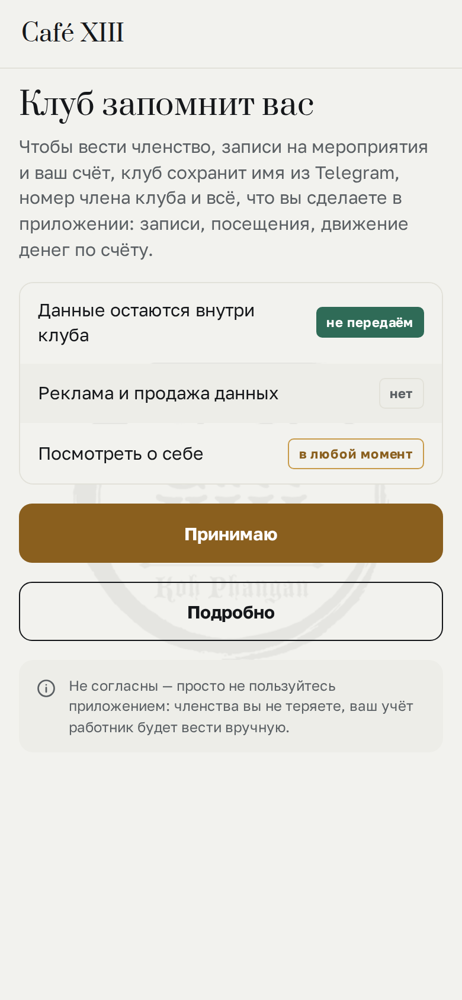
01 Согласие на данные consentв тестеСогласие на данные. Первый экран до всего остального: без вкладок и «назад», уйти можно только решением.видят: владелец, работник без членства, куратор с живым членством, работник бара без членства, гость без ролей · виден всем
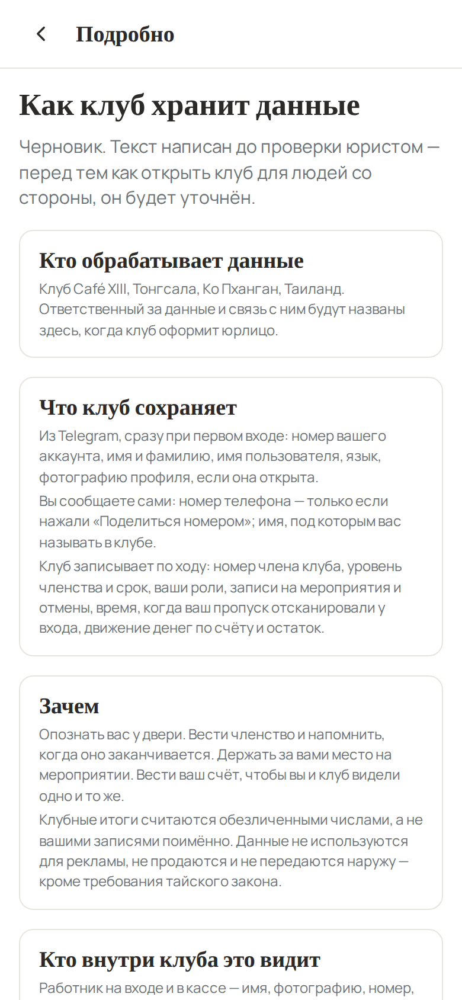
02 Согласие · полный текст consentFullв тестеПолный текст согласия разделами. Черновик — перед открытием для людей со стороны его смотрит тайский юрист.видят: владелец, работник без членства, куратор с живым членством, работник бара без членства, гость без ролей · виден всем
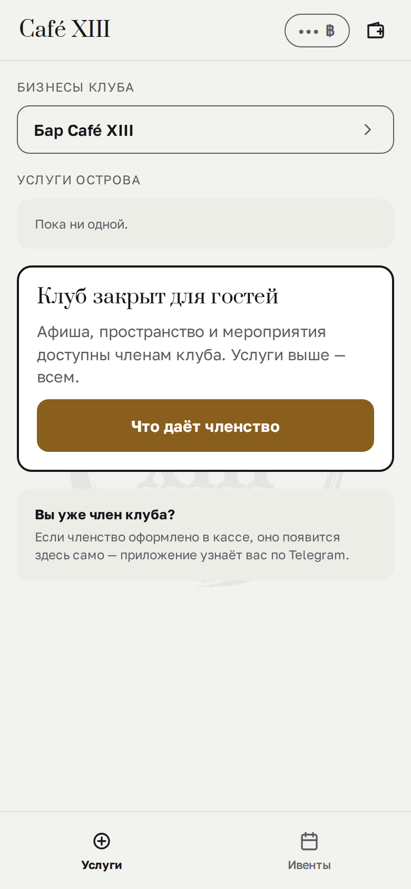
03 Услуги и бар guestв тесте · кадры E43Что видит человек без членства (кадр E43): бизнесы клуба и услуги — всем, ниже «Клуб закрыт для гостей», что даёт членство и «Вы уже член клуба?». Снят как есть: гостевой доступ (шаг 37) ещё не делан, решение владельца — гость смотрит, но не пользуется. Строки бизнесов из сервера (шаг 19) рисуются только в Telegram. Признак — «Клуб закрыт для гостей»: он держит ветку ГОСТЯ — у члена клуба этого блока нет.видят: владелец, работник без членства, куратор с живым членством, работник бара без членства, гость без ролей · своя вкладка
04 Клуб homeв тесте · кадры E51,E53,E68Главный экран: уровень, срок, пропуск, ближайшая запись. Остаток — в шапке справа, скрыт до нажатия. ⚠ ШАГ 16 НА ЭТОМ СНИМКЕ НЕ ВИДЕН, и это законно: блок «Свой бизнес в клубе» с дверью «Карточки на согласовании» и счётчиком ждущих решения рисуется только в Telegram. Причин две, и после сборки шага 16 их стало именно две: `partnerOffer()` вне живого режима даёт пустую строку, а `BW.dirs` остаётся `null` — заполняют его ровно два места, и оба начинаются с `if (!LIVE) return` (демо-набор `BW` не трогает вовсе). ⚠ И ПРИ ЭТОМ классы `.card`, `.chev`, `.grow`, `.listitem` в разметке этого вида ЕСТЬ — от ЧУЖИХ элементов: `card strong` — карточка пропуска, `listitem` — ближайшая запись, `grow` — середины трёх чужих строк. Отсутствие ЭЛЕМЕНТА и отсутствие КЛАССА здесь не одно и то же, и опись вправе утверждать только второе (замер мой, приговор шага 7 по голове ствола).видят: владелец, работник без членства, куратор с живым членством, работник бара без членства, гость без ролей · своя вкладка
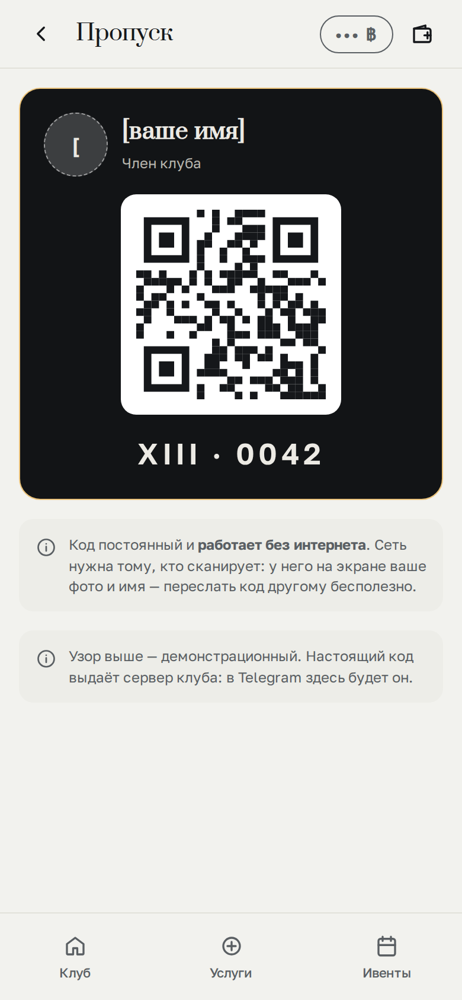
05 Пропуск passв тесте · кадры E50Пропуск. Работает без интернета, сеть нужна тому, кто сканирует.видят: куратор с живым членством · дверь на «Клуб»
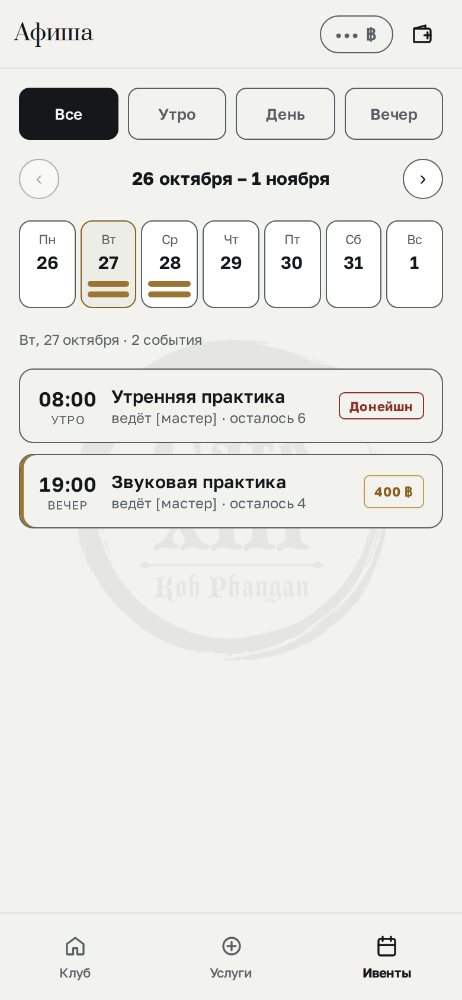
06 Афиша eventsв тесте · кадры E60Афиша по дням.видят: владелец, работник без членства, куратор с живым членством, работник бара без членства, гость без ролей · своя вкладка или дверь на «Клуб» или «Мои ивенты» или «Мои мероприятия»
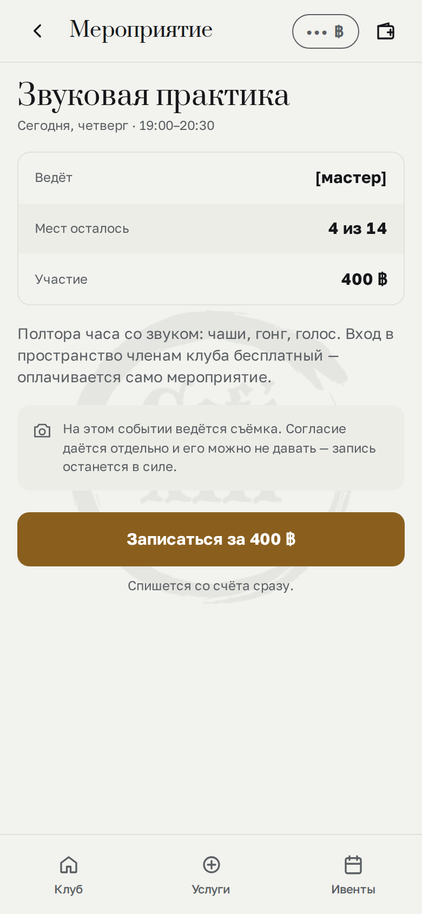
07 Мероприятие eventв тесте · кадры E37,E62,E66Мероприятие: цена, места, съёмка, запись.видят: владелец, работник без членства, куратор с живым членством, работник бара без членства, гость без ролей · за экраном «Афиша» (в мероприятие ведёт строка афиши — обходом не подтверждено)
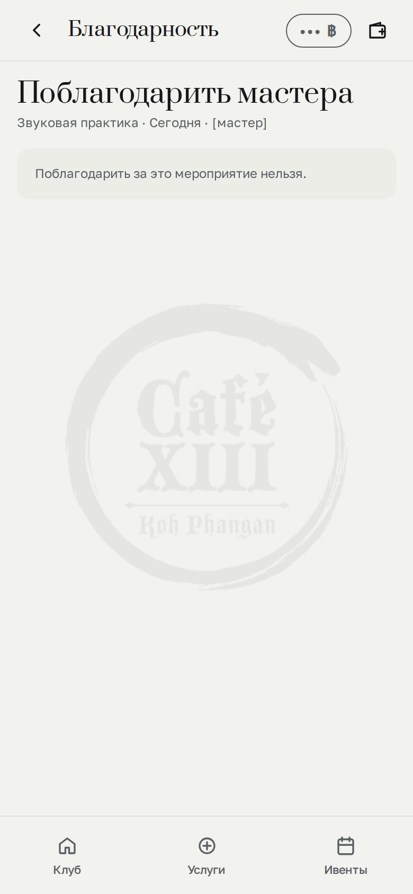
08 Благодарность мастеру thanksв тесте · кадры E65Благодарность мастеру за прошедшее (E65, шаг 7). Снимок — состояние ОТКАЗА: право благодарить даёт сервер, в демо-наборе его нет ни у одного события, поэтому видно заголовок и «нельзя». Признак взят на заголовке, а не на «нельзя»: отказ сменится формой, когда в наборе появится прошедшее событие с правом, и признак обязан пережить эту смену.видимость: кнопкой «Поблагодарить мастера» в карточке прошедшего мероприятия, где я был записан и сервер даёт my_may_thank (вход — «Мои записи» на «Клубе» → «Прошедшие записи»); обход дверей ловит только [data-go], а это [data-action], поэтому имена не измерены, а не «никто»
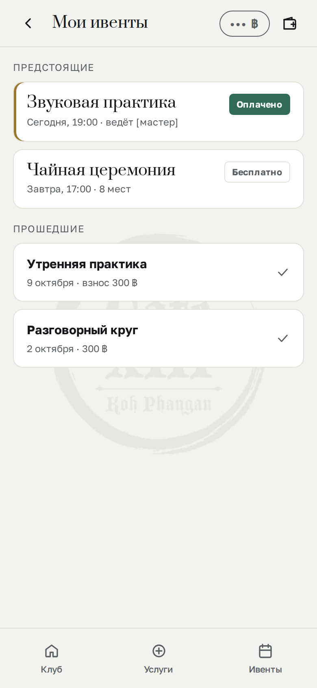
09 Мои ивенты bookingsв тесте · кадры E40Свои записи — предстоящие и прошедшие.видят: владелец, работник без членства, куратор с живым членством, работник бара без членства, гость без ролей · дверь на «Клуб»
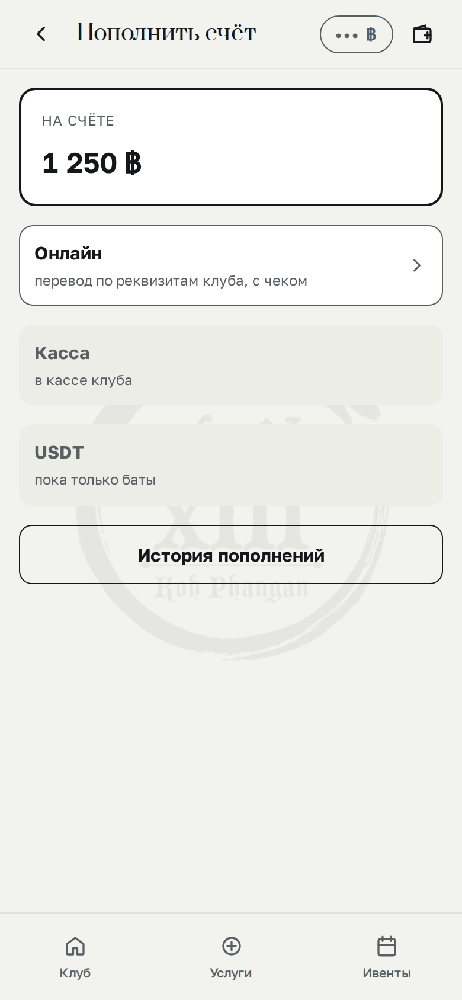
10 Свой счёт topupв тесте · кадры E52Пополнение члена клуба (кадр E52): остаток и три пути — «Онлайн» (перевод по реквизитам с чеком), «Касса» (в демонстрации «в кассе клуба», в живом, пока касса заморожена, «появится позже») и «USDT» (пока только баты); ниже — история пополнений. Сюда ведёт кошелёк в шапке. Форму «внести себе» видит только тот, у кого право кассы, — её здесь нет.видят: владелец, работник без членства · право canTopup() и за экраном «Клуб» (вход — кнопка «Внести себе на счёт» на экране «Клуб» — обходом не подтверждено)
5 экранов
Бар · гость заказывает
Первое направление клуба. Меню, заказ из приложения, состояние заказа.
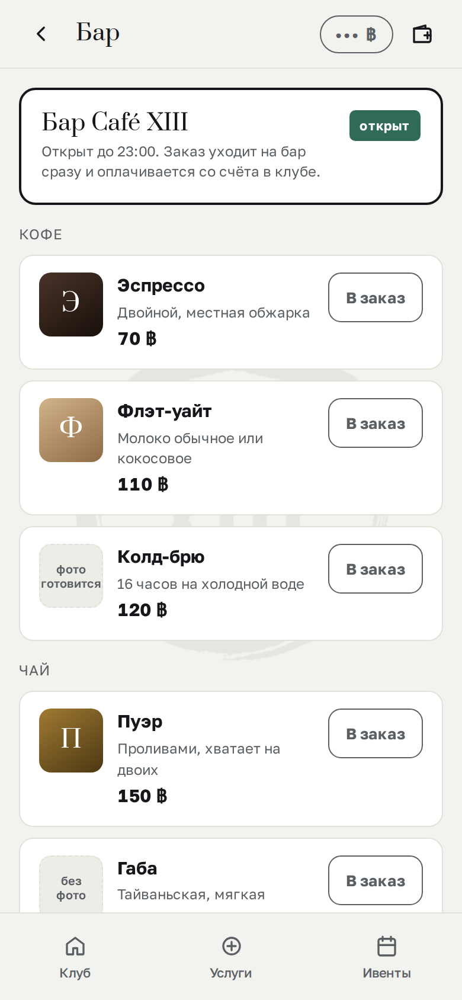
11 Меню бара barв тесте · кадры E21Меню бара: группы, строка позиции с ценой и временем, кнопка «В заказ». Первое направление клуба; открыто и гостю без членства.видят: владелец, работник без членства, куратор с живым членством, работник бара без членства, гость без ролей · за экраном «Услуги и бар» (вход рисуется по данным сервера — обходом не подтверждено)
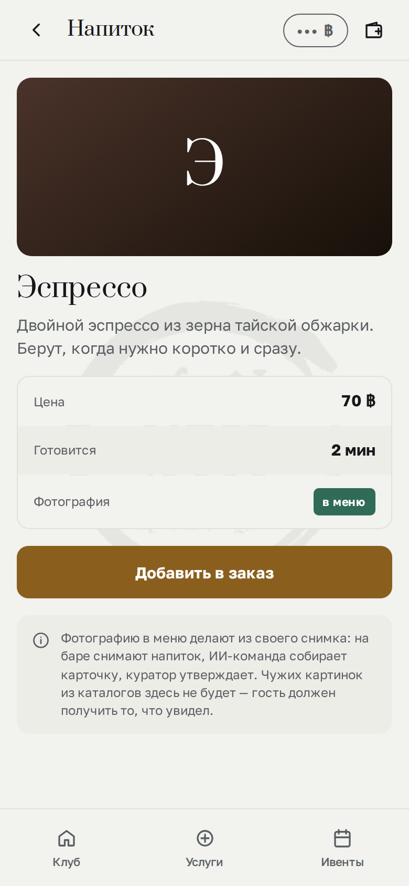
12 Напиток drinkв тесте · кадры E22Карточка напитка: полное описание, цена, время, путь к рецепту. Открывается строкой меню — поэтому снимок берётся с доводом `espresso`.видят: владелец, работник без членства, куратор с живым членством, работник бара без членства, гость без ролей · за экраном «Меню бара» (в карточку ведёт строка меню, а меню без сервера пусто — обходом не подтверждено)
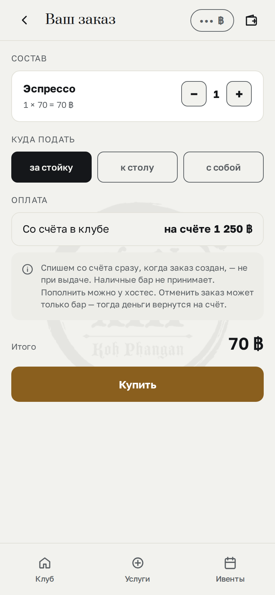
13 Заказ barCartв тесте · кадры E23Заказ: позиции с количеством, сумма, выбор «к столу» или «с собой» и кнопка «Купить». Выбора способа оплаты здесь нет: на баре платят только со счёта (решение владельца). ⚠ Снимок берётся с фикстурой `CART` — пустой заказ рисует «Заказ пуст», и это другой экран состава.видят: владелец, работник без членства, куратор с живым членством, работник бара без членства, гость без ролей · за экраном «Меню бара» (кнопка «Оформить» появляется, когда в заказе что-то есть — обходом не подтверждено)
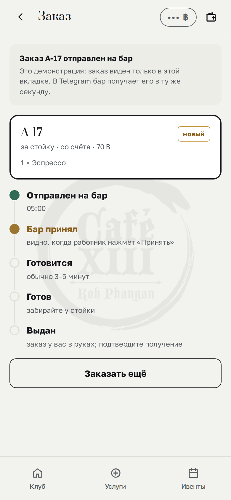
14 Состояние заказа barOrderв тесте · кадры E24Состояние своего заказа: номер, состав, куда подан, что списано, шаги «Отправлен — Бар принял — Готовится — Готов». ⚠ Заказ здесь НЕ выдуман: его отправили функциональные проверки выше настоящим кликом, а фикстура возвращает состояние к первому шагу, чтобы снимок не зависел от того, где остановился сценарий.видят: владелец, работник без членства, куратор с живым членством, работник бара без членства, гость без ролей · за экраном «Заказ» (открывается ответом сервера на оформленный заказ — обходом не подтверждено)
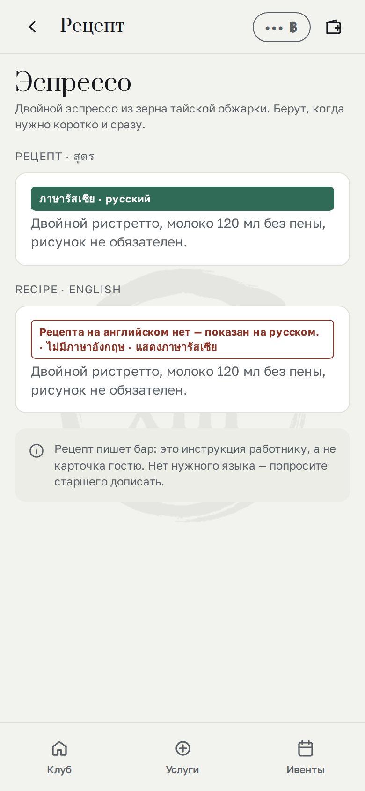
15 Рецепт напитка barRecipeв тесте · кадры E28Рецепт напитка двумя языками: состав и порядок. Виден гостю из карточки, а бару и куратору — на своём направлении.видимость: админ, а бар и куратор — на своём направлении (mayRecipe; направление приходит с сервера, прибором здесь не считается)
4 экрана
Мастер
Член клуба, который проводит свои мероприятия и сам назначает их цену.
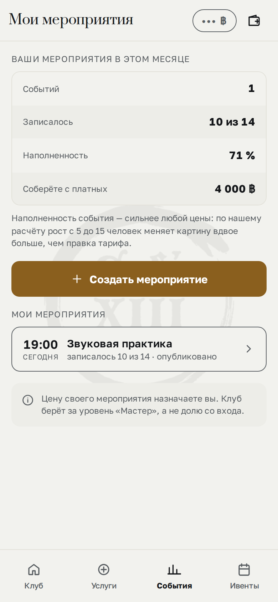
16 Мои мероприятия organizerв тесте · кадры E61Свои мероприятия и наполненность.видят: владелец, работник без членства, куратор с живым членством · дверь на «Афиша» или «Управление» и путь открыт только при непустой афише
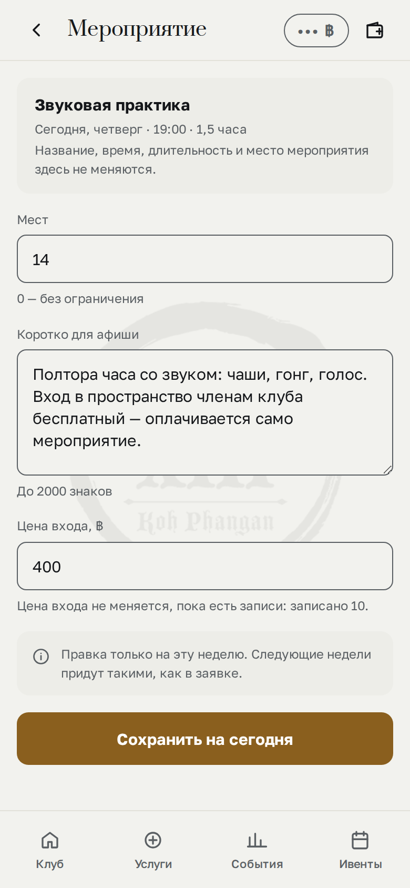
17 Правка мероприятия eventEditв тесте · кадры E55k,E67Правка ОДНОЙ недели своего мероприятия (кадры E55k, E67; Cafe13KPG#691): шапка с названием, днём, временем и местом, которые здесь не меняются; «Мест», «Коротко для афиши», «Цена входа» и строка о том, что правка только на эту неделю. Взято `sound`: на нём есть записи, поэтому цена погашена и под ней стоит причина словами клиента. Признак — «Сохранить на сегодня»: кнопка есть только у формы, у отказа «Править это мероприятие может его ведущий» её нет, и признак держит ветку формы вместе с днём демо-мероприятия. ⚠ Вне Telegram форма рисуется с 639fde9 (`js/14-ekrany-meropriyatiya.js:212`, `LIVE && !canEditEvent`): «моё ли это» вне живого режима не проверяется, и снимок этого не утверждает. Прямой заход с чужого и кончившегося держат случаи `edt-knopka`/`edt-vitrina` в `tools/live.cjs`. Двери в демонстрации нет (`event-edit` открывается только при `LIVE`), снимок снят прямым `go`.видимость: кнопкой «Изменить описание и места» в карточке своего не кончившегося мероприятия (canEditEvent: ведущий — я, не завершилось, mayOwnEvents); обход дверей ловит только [data-go], а это [data-action], поэтому имена не измерены, а не «никто»
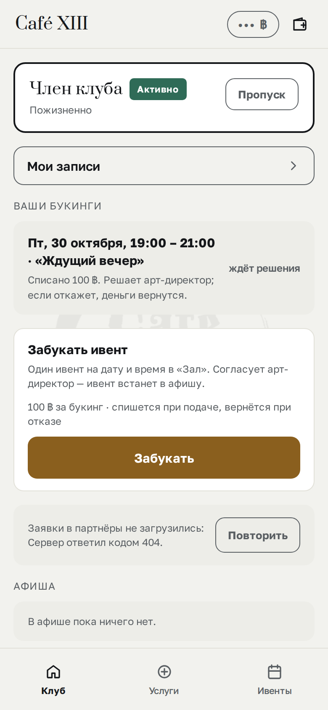
18 Клуб homeв тесте · кадры E51,E53,E68«Клуб» члена со СВОИМ ждущим букингом (семья master, рецепт `_docs/recept/ekran/master/home.md`, строки H1–H2) и входом «Забукать». ⚠ Снимок ЖИВОГО режима на фикстуре; форма ответов — по снимкам api `master-requests-mine-pending` и `master-price` (страж формы съёмки), числа и названия — фикстура. Признак — «Ваши букинги»: заголовок рисуется только по пришедшему непустому списку. Ручки партнёрства фикстуры не имеют (404) — их блок на снимке в виде отказа. Своя карточка чайного мастера — «карточки нет» (`GET /tea/card/mine`, status none).видят: владелец, работник без членства, куратор с живым членством, работник бара без членства, гость без ролей · своя вкладка
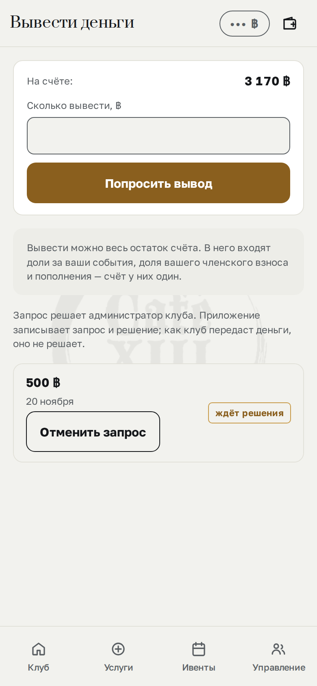
19 Вывести деньги withdrawв тестеВывод денег мастером (шаг 25, Cafe13KPG#1077): остаток счёта, поле суммы и список своих запросов. ⚠ Снимок ЖИВОГО режима на фикстуре: право `mayWithdraw() = LIVE && grant('master')`, вне Telegram экран рисует только отказ. Форма фикстуры — по снимку api `withdraw-mine`. Признак — «Сколько вывести, ฿»: поле рисуется только после пришедшего списка своих запросов.видимость: за «Управлением», строка «Вывести деньги» — только у держателя роли master (mayWithdraw); мастера среди пяти человек фикстуры видимости нет, поэтому имена не измерены, а не «никто»; с мастером в фикстуре условие заменяется на дверь
7 экранов
Служебное
Экран под солнышком. Кнопка солнышка есть только у god и god_mentor в Telegram; вне Telegram её нет ни у кого. Снимок — тот же экран в демонстрации.
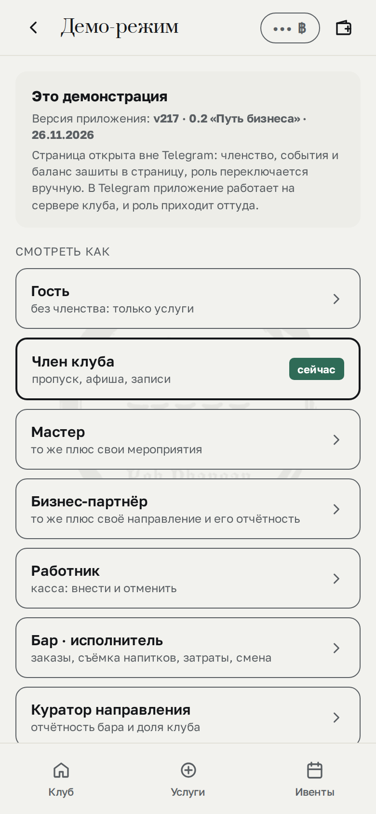
20 Демо-режим demoв тестеДемо-режим: переключение роли и версия приложения.видимость: кнопка солнышка — только у god и god_mentor и только в Telegram
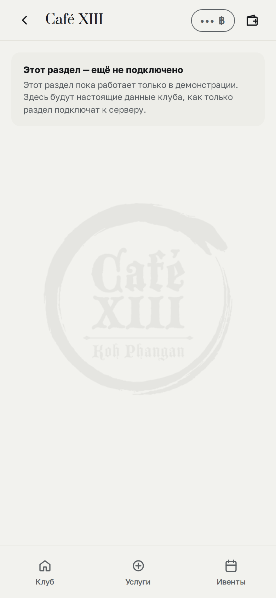
21 Раздел ещё не подключён soonслужебныйЧто человек видит вместо любого НЕВКЛЮЧЁННОГО экрана: раздел написан, но к серверу не подключён. В Telegram в заголовке стоит имя самого раздела («Членство — ещё не подключено»), здесь общая форма: имени у подстановки нет.видимость: показывается вместо любого невключённого экрана; сами входы считает генератор и печатает их у каждого такого экрана строкой «состояние» — числа в этой прозе нет нарочно, оно стареет
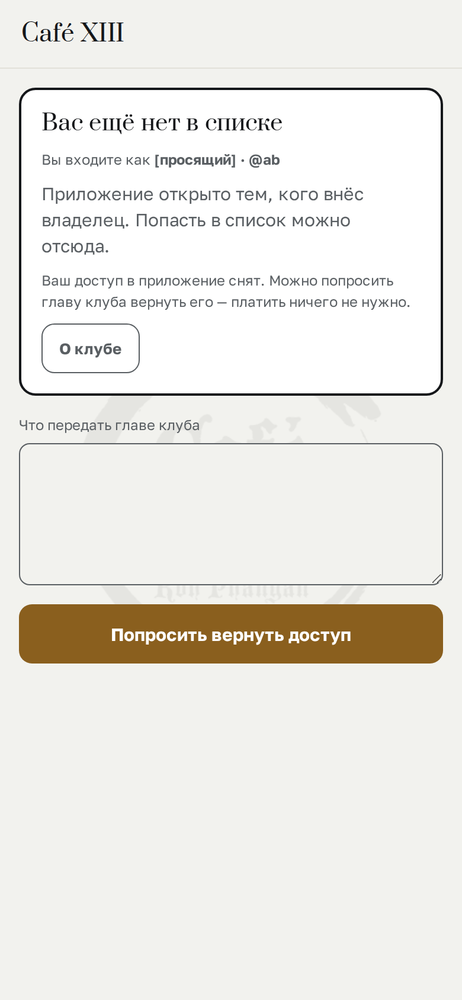
22 Нет доступа noAccessв тесте · кадры E44Нет доступа: выгнанный просит главу клуба вернуть его (фича 8, рецепт `_docs/recept/ekran/popolnenie/noAccess.md`, J1–J2) — без денег, суммы, чека и кассы. ⚠ Снимок ЖИВОГО режима на фикстуре: вид рисуется только по ответу `GET /join`; форма — по снимку api `join-info-none` (страж формы съёмки), значения — заглушка `JOIN0` из `tools/live.cjs`. Признак — «Ваш доступ в приложение снят»: слово `noAccess.return.note`.видят: владелец, работник без членства, куратор с живым членством, работник бара без членства, гость без ролей · виден всем
снимка нет: снимок делается вне Telegram, где прав нет ни у кого: экран живёт только при сервере клуба
23 Загрузка loadingв тестеПока идёт первый ответ сервера.видят: владелец, работник без членства, куратор с живым членством, работник бара без членства, гость без ролей · виден всем
снимка нет: снимок делается вне Telegram, где прав нет ни у кого: экран живёт только при сервере клуба
24 Подпись не дошла noSignв тестеПодпись Telegram не дошла — войти нечем.видят: владелец, работник без членства, куратор с живым членством, работник бара без членства, гость без ролей · виден всем
снимка нет: снимок делается вне Telegram, где прав нет ни у кого: экран живёт только при сервере клуба
25 О клубе joinAboutв тесте · кадры E49Тетрадь клуба внутри приложения, по кнопке «О клубе» с экрана просьбы; назад — на просьбу (кадры E49*).видят: владелец, работник без членства, куратор с живым членством, работник бара без членства, гость без ролей · виден всем
снимка нет: снимок делается вне Telegram, где прав нет ни у кого: экран живёт только при сервере клуба
26 Сервер молчит apiDownв тестеСервер клуба не отвечает.видят: владелец, работник без членства, куратор с живым членством, работник бара без членства, гость без ролей · виден всем
8 экранов
Мастер · шаг 3
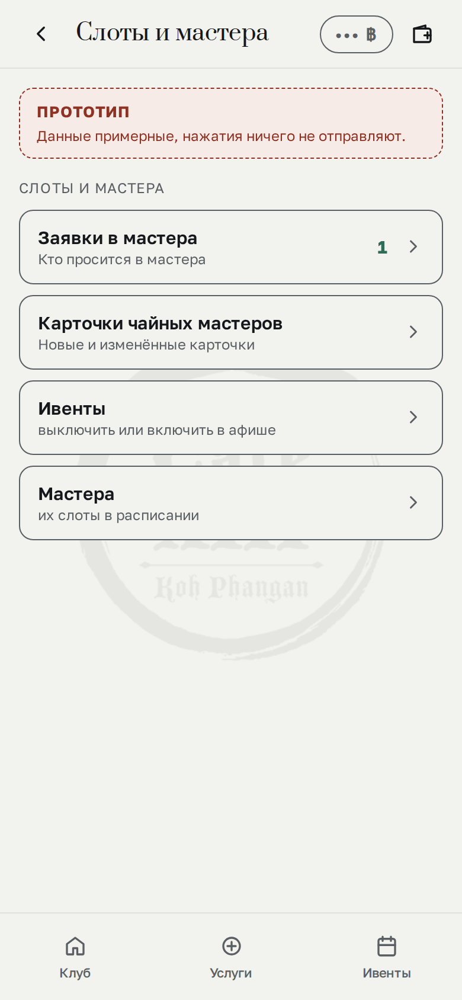
27 Слоты и мастера mastersв тесте · кадры E55bСлоты и мастера: три входа — заявки в мастера, ивенты в афише, мастера со своими слотами; число ждущих заявок — пометкой-цифрой на плашке (Cafe13KPG#769). Признак снимка — «Кто просится в мастера1»: подпись и цифра демо-набора подряд; он держит не только отрисовку, но и то, что демо-набор пришёл (без него за подписью шло бы «Ивенты»). ⚠ Цифра в признаке — ЗНАЧЕНИЕ ФИКСТУРЫ: `MR.pending = 1` в демо-наборе мастеров (js/07-mastera.js:203). Строки из данных на этом экране нет — три входа постоянны, из данных только счёт. При правке `MR.pending` признак правится тем же ходом, иначе отказ съёмки прочитается как «экран сломался», хотя сменился набор (условие frontend-events-9d). Снимок демонстрации: данные выдуманы, в Telegram их отдаёт сервер. Руками в демонстрации сюда не попасть — вход стоит под правом арт-директора.видимость: за «Управлением», право mayMasters — арт-директор или админ; у админа право спрошено фикстурой видимости, а человека с ОДНОЙ ролью арт-директора в ней НЕТ (Cafe13KPG#871) — ветка art_director не измерена, поэтому имена не измерены (Cafe13KPG#612), а не «никто»
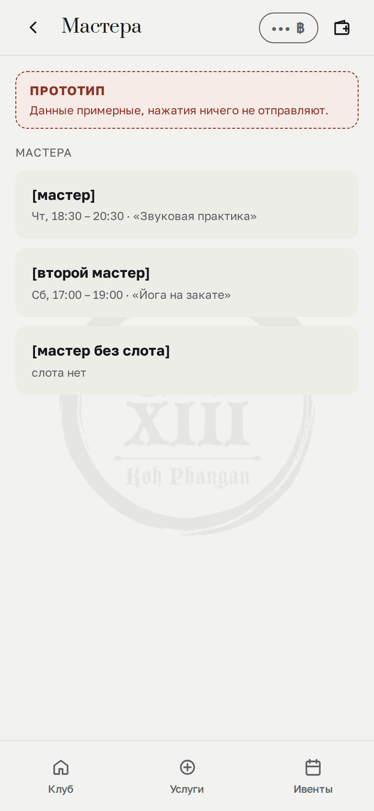
28 Мастера masterListв тесте · кадры E55dМастера и их слоты в расписании: сначала те, у кого слот есть (день, час и название), затем те, у кого слота нет. Признак — «слота нет»: он держит приход демо-набора с двух сторон, потому что без `MR.slots` экран вообще подменяется на «Ивенты» (`return SCREENS.masterEvents()`), а без `MR.without` строки «слота нет» не будет. Снимок демонстрации: данные выдуманы, в Telegram их отдаёт сервер. Руками в демонстрации сюда не попасть — вход стоит под правом арт-директора.видимость: за «Управлением», право mayMasters — арт-директор или админ; у админа право спрошено фикстурой видимости, а человека с ОДНОЙ ролью арт-директора в ней НЕТ (Cafe13KPG#871) — ветка art_director не измерена, поэтому имена не измерены (Cafe13KPG#612), а не «никто»
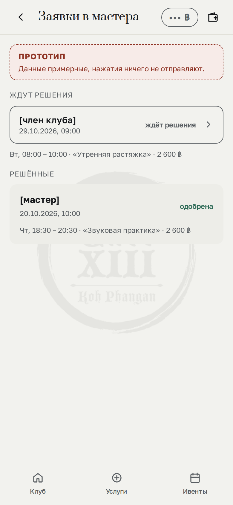
29 Заявки в мастера masterReqsв тесте · кадры E55vЗаявки в мастера: кто просится, с названием практики и словом о решении; ждущие сверху. Признак — «[член клуба]»: имя просителя приходит из `MR.q`, то есть признак держит и приход демо-набора — без него экран печатал бы «Заявок нет». Снимок демонстрации: данные выдуманы, в Telegram их отдаёт сервер. Руками в демонстрации сюда не попасть — вход стоит под правом арт-директора.видимость: за «Управлением», право mayMasters — арт-директор или админ; у админа право спрошено фикстурой видимости, а человека с ОДНОЙ ролью арт-директора в ней НЕТ (Cafe13KPG#871) — ветка art_director не измерена, поэтому имена не измерены (Cafe13KPG#612), а не «никто»
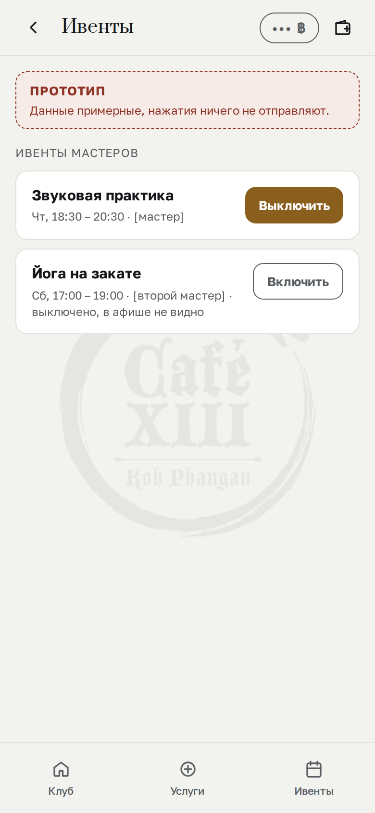
30 Ивенты мастера masterEventsв тесте · кадры E55eИвенты мастеров: их слоты в афише, каждый можно выключить или включить. Признак — «Выключить»: кнопка появляется только у ВКЛЮЧЁННОГО слота из `MR.slots`, то есть держит и приход демо-набора — без него экран печатал бы «Ивентов мастеров нет». Снимок демонстрации: данные выдуманы, в Telegram их отдаёт сервер. Руками в демонстрации сюда не попасть — вход стоит под правом арт-директора.видимость: за «Управлением», право mayMasters — арт-директор или админ; у админа право спрошено фикстурой видимости, а человека с ОДНОЙ ролью арт-директора в ней НЕТ (Cafe13KPG#871) — ветка art_director не измерена, поэтому имена не измерены (Cafe13KPG#612), а не «никто»
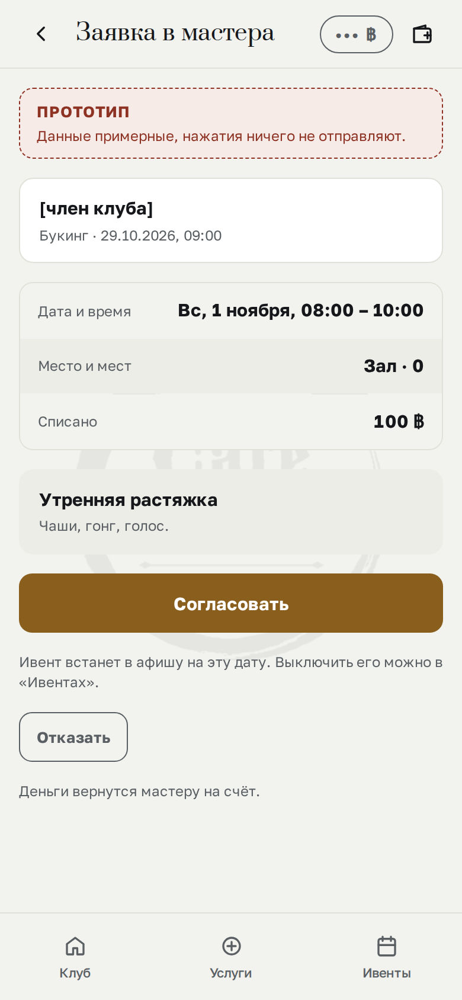
31 Заявка в мастера · решение masterReqв тесте · кадры E55g,E58Заявка в мастера, решение по одной: кто просит, какой день и час, место и мест, статус словом, под ними «Согласовать» и «Отказать» с подписью «Деньги вернутся мастеру на счёт.» (кадр E55ж). Признак — «Утренняя растяжка»: это название ЗАЯВКИ 902 из демо-набора, поэтому он держит сразу две вещи — приход `MR.q` и то, что экран выбрал запись ПО ПАРАМЕТРУ, а не показал «Такой заявки нет» или соседнюю. Снимок демонстрации: данные выдуманы, в Telegram их отдаёт сервер. Руками в демонстрации сюда не попасть — вход стоит под правом арт-директора.видимость: за «Управлением», право mayMasters — арт-директор или админ; у админа право спрошено фикстурой видимости, а человека с ОДНОЙ ролью арт-директора в ней НЕТ (Cafe13KPG#871) — ветка art_director не измерена, поэтому имена не измерены (Cafe13KPG#612), а не «никто»
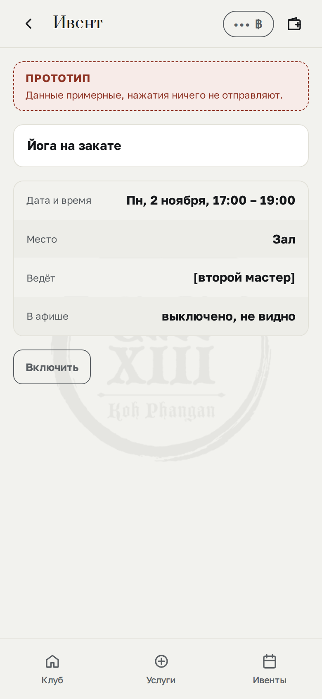
32 Ивент мастера masterEventв тесте · кадры E57Ивент мастера, один слот: день и время, место, кто ведёт, состояние в афише и сколько недель впереди. Взят ВЫКЛЮЧЕННЫЙ слот 903 — у него кнопка «Включить», и экран показывает больше, чем включённый. Признак — «Йога на закате»: название именно слота 903, то есть держит и приход `MR.slots`, и выбор записи ПО ПАРАМЕТРУ (у 901 название другое). Снимок демонстрации: данные выдуманы, в Telegram их отдаёт сервер.видимость: за «Управлением», право mayMasters — арт-директор или админ; у админа право спрошено фикстурой видимости, а человека с ОДНОЙ ролью арт-директора в ней НЕТ (Cafe13KPG#871) — ветка art_director не измерена, поэтому имена не измерены (Cafe13KPG#612), а не «никто»
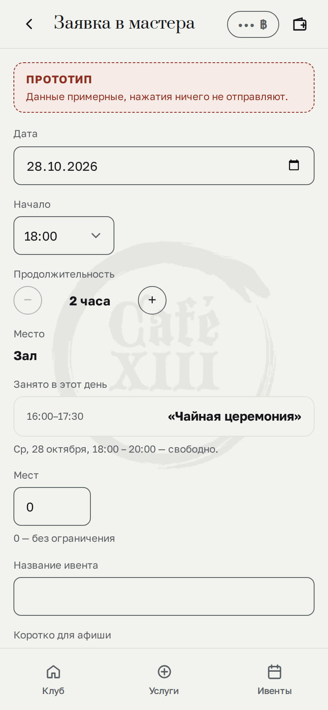
33 Заявка в мастера · подача masterApplyв тесте · кадры E54bБукинг ивента, сама форма (Cafe13KPG#985): дата, начало, продолжительность, место и занятость выбранной даты, сумма к списанию с сервера. Своя ждущая или согласованная заявка форму не закрывает: букингов сколько угодно. Признак — «Занято в этот день»: этот блок приходит из `MSB.data` демо-набора, то есть держит и форму, и приход набора.видимость: кнопкой «Забукать» в блоке «Забукать ивент» на главном (с #985; прежде «Я мастер») — у любого, кто не гость, и только в живом (masterOffer выходит пустым при роли «guest» и вне Telegram); обход дверей ловит только [data-go], а это [data-action], поэтому не измерено
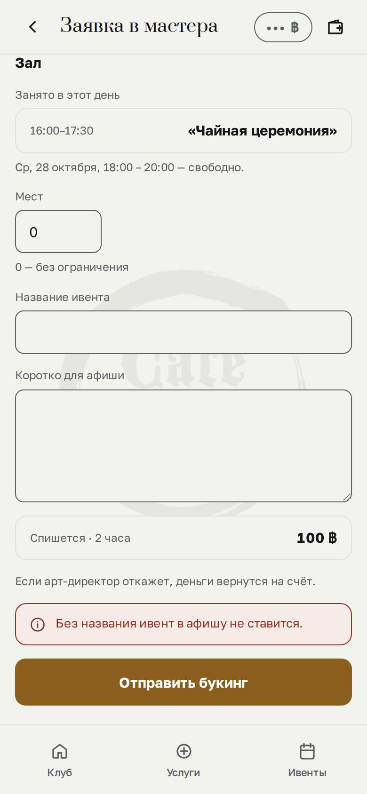
34 Заявка в мастера · подача masterApplyв тесте · кадры E54bОтказ подачи букинга: строка отказа над кнопкой «Отправить букинг», форма не закрылась. Снят настоящим нажатием на пустую форму — проверка клиента отвечает «Без названия ивент в афишу не ставится» до всякого запроса. Тем же блоком в Telegram встают отказы сервера (409 «время пересекается…» — его форма ловится в tools/live.cjs, случай ms-busy-409). Снимок демонстрации: данные выдуманы.видимость: кнопкой «Забукать» в блоке «Забукать ивент» на главном (с #985; прежде «Я мастер») — у любого, кто не гость, и только в живом (masterOffer выходит пустым при роли «guest» и вне Telegram); обход дверей ловит только [data-go], а это [data-action], поэтому не измерено
17 экранов
Клуб · ответственность
Кто за что отвечает в клубе: выдать и снять роль.
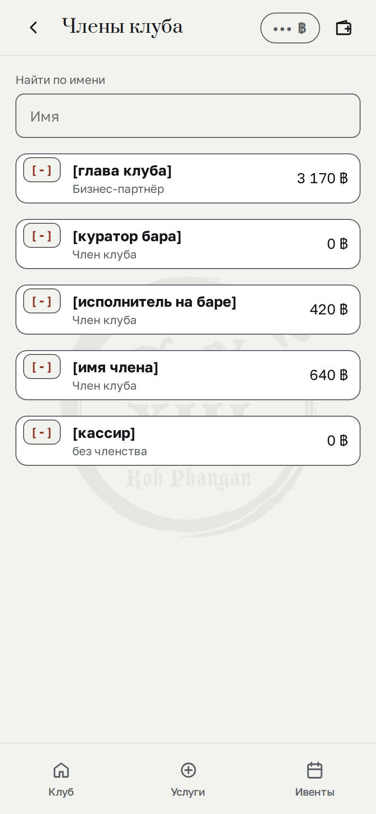
35 Члены клуба peopleв тесте · кадры E47Кто за что отвечает в клубе: выдать и снять ответственность. Снимок демонстрации: данные выдуманы, в Telegram их отдаёт сервер. Руками в демонстрации сюда не попасть — вход стоит под правом.видят: владелец · дверь на «Управление»
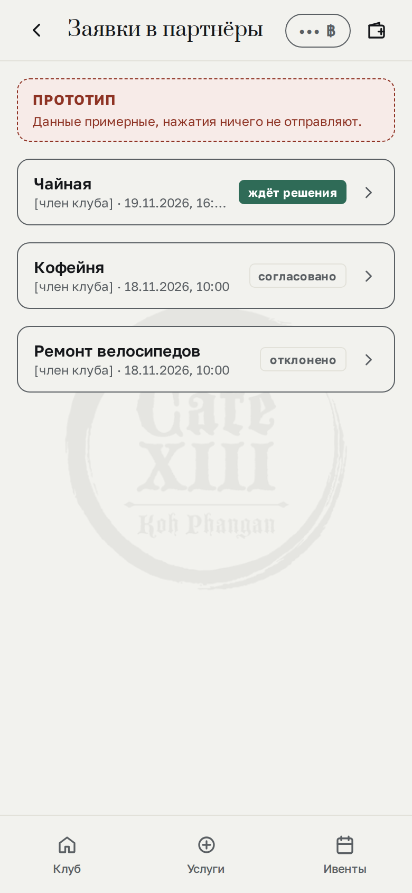
36 Заявки в партнёры partnerReqsв тестеЗаявки в партнёры (шаг 13, рецепт `_docs/recept/ekran/13/partnerReqs.md`): список заявок строками — название, кто и когда подал, слово состояния, ждущая выделена. Демо-набор клиента: ждёт, согласовано, отклонено.видят: владелец · дверь на «Управление»
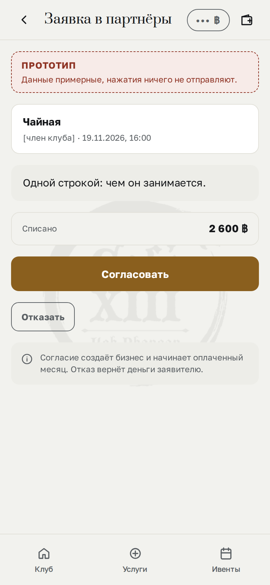
37 Заявка в партнёры · решение partnerReqв тестеОдна заявка в партнёры, ЖДУЩАЯ решения (рецепт `_docs/recept/ekran/13/partnerReq.md`): название, заявитель и день, описание тушью, «Списано», «Согласовать» и «Отказать», записка о том, что делает согласие.видимость: плашкой заявки в «Заявках в партнёры» (право mayOps); обход дверей ловит только [data-go], а это [data-action], поэтому имена не измерены, а не «никто»
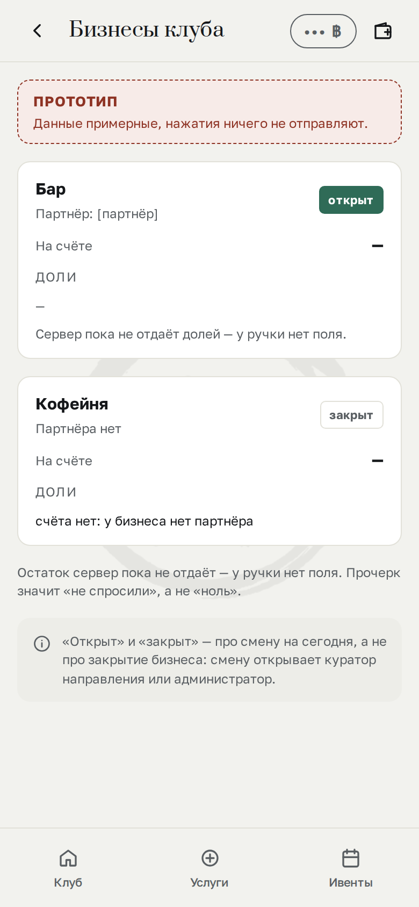
38 Бизнесы клуба businessesв тесте · кадры E75Бизнесы клуба у операционного директора (кадр E75, шаги 20–21): карточка каждого бизнеса — партнёр, открыт или закрыт, «На счёте» и «Доли» строками. Состояния у бизнесов разные, поэтому слова под счётом разные: у бизнеса без партнёра счёта нет. Признак — «Партнёр: [партнёр]»: он держит приход демо-набора — без него экран печатал бы «Загружаем бизнесы клуба…». Снимок демонстрации: данные выдуманы, в Telegram их отдаёт сервер; руками в демонстрации сюда не попасть — вход у операционного директора.видят: владелец · дверь на «Управление»
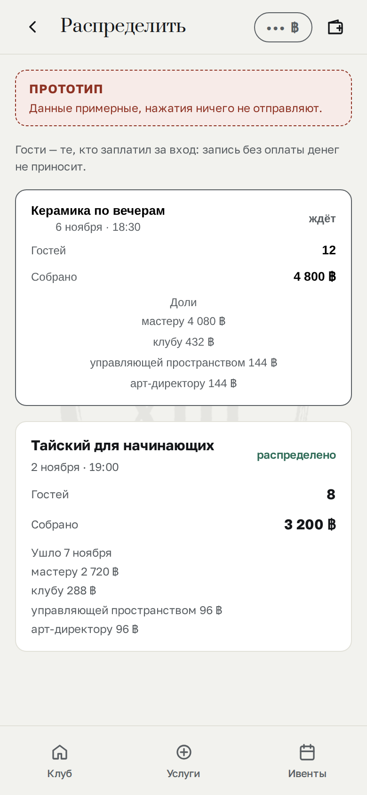
39 Распределить деньги payoutsв тесте · кадры E69Распределение денег прошедших мероприятий (кадр E69, Cafe13KPG#1077): плашка «ждёт» с долями и плашка «распределено» с тем, что ушло. Признак — «Керамика по вечерам»: название из демо-набора `PAY.list` (`js/07-mastera.js`), без набора экран печатал бы «Загружаем прошедшие мероприятия…». ⚠ Правят набор — правят признак тем же ходом. Вне Telegram отказ «Сюда нельзя» не рисуется (`LIVE && !mayMasters()`), поэтому снимок права не утверждает.видимость: за «Управлением», строка «Распределить деньги» в группе «Деньги», право mayMasters — арт-директор или админ; у админа право спрошено фикстурой видимости, а человека с ОДНОЙ ролью арт-директора в ней НЕТ (Cafe13KPG#871) — ветка art_director не измерена, поэтому имена не измерены (Cafe13KPG#612), а не «никто»
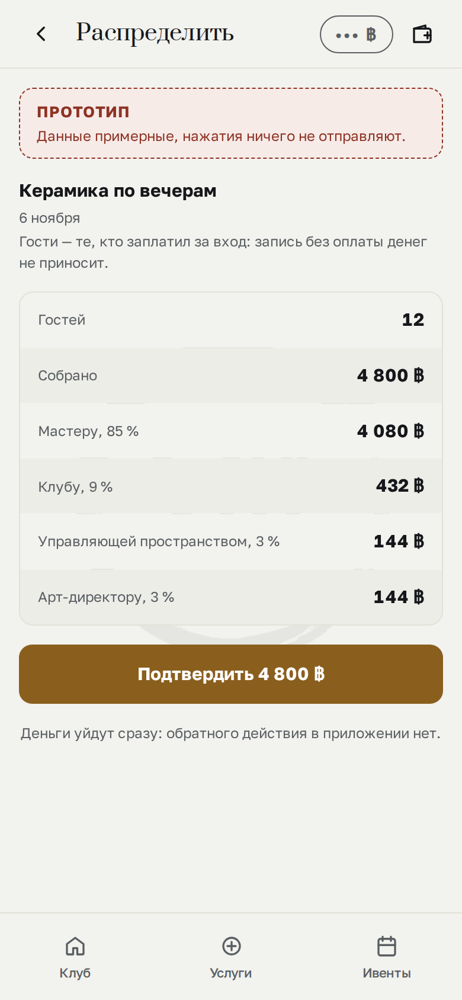
40 Распределить деньги · подтверждение payoutв тесте · кадры E69bОдно мероприятие к распределению (кадр E69b, Cafe13KPG#1077): гости, собрано, доли с процентами и кнопка, называющая нераспределённый остаток. Довод `911` — плашка «ждёт» демо-набора. Признак — «Подтвердить»: кнопка есть только у неразделённого мероприятия, у разделённого и у «Такого мероприятия нет» её нет.видимость: плашкой «ждёт» на «Распределить деньги» (право mayMasters, may_distribute от сервера); обход дверей ловит только [data-go], а это [data-action], и человека с ОДНОЙ ролью арт-директора в фикстуре видимости НЕТ (Cafe13KPG#871), поэтому имена не измерены, а не «никто»
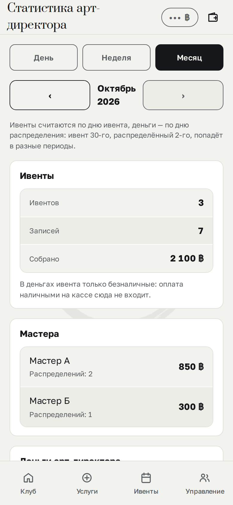
41 Статистика арт-директора artStatsв тестеСтатистика арт-директора (шаг 32, рецепт `_docs/recept/ekran/32/artStats.md`): переключатель «День · Неделя · Месяц», период со стрелками, блоки «Ивенты», «Мастера» и «Деньги» и три надписи, без которых экран врёт. ⚠ Снимок ЖИВОГО режима на фикстуре: право начинается с `LIVE`, и вне Telegram экран рисует только отказ. Числа — фикстура съёмки, не данные клуба. Признак — «Мастер А»: имя из фикстуры `/stats/art`, без неё экран печатал бы «не загрузилось».видят: владелец · дверь на «Управление»
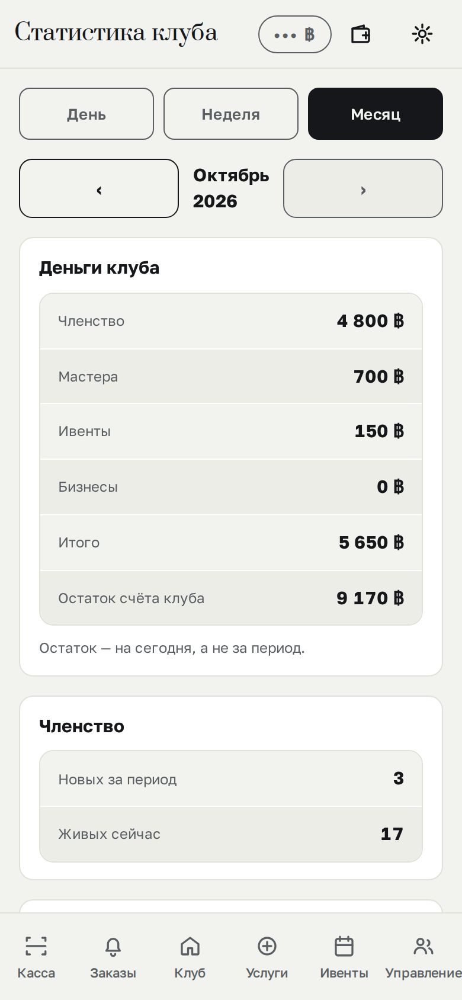
42 Статистика клуба clubStatsв тестеСтатистика клуба у главы (шаг 31, рецепт `_docs/recept/ekran/31/clubStats.md`): переключатель периода, блоки денег клуба, членства, ивентов, бизнесов и кассы. ⚠ Снимок ЖИВОГО режима на фикстуре: право начинается с `LIVE`. Числа — фикстура съёмки (форма — по заглушке `CS_RESP` в `tools/live.cjs`), не данные клуба. Признак — «Остаток счёта клуба»: строка рисуется только по пришедшему ответу `/stats/club`, без него экран печатал бы «не загрузилось».видят: владелец · дверь на «Управление»
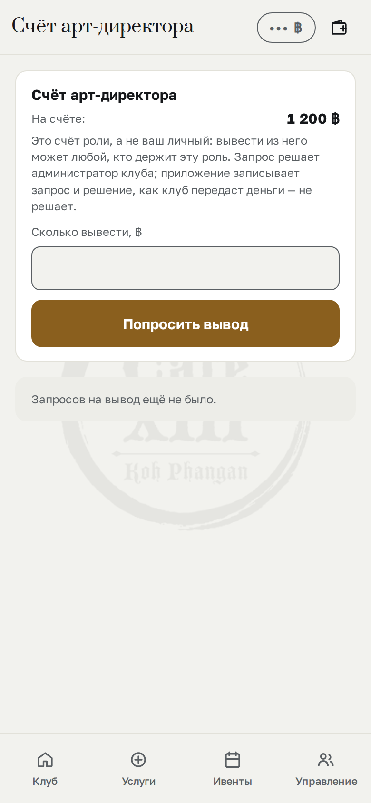
43 roleAccount roleAccountв тестеСчёт роли (шаг 27, рецепт `_docs/recept/ekran/27/roleAccount.md`): остаток счёта СВОЕЙ роли в книге клуба, слово о том, что это счёт роли, а не личный, поле суммы и запрос на вывод; решает администратор в «Запросах на вывод». ⚠ Снимок ЖИВОГО режима на фикстуре: право начинается с `LIVE`. Числа — фикстура съёмки (форма — по заглушкам `RA_ACCROW` в `tools/live.cjs`), не данные клуба. Признак — «На счёте:»: строка рисуется только когда пришли и счета, и свои запросы.видимость: строкой счёта роли в «Ваших ролях» на «Клубе» — у держателя art_director, space_manager или head (raAccounts); head в фикстуре видимости есть только у «владельца», а вкладки «Клуб» у него нет — членства в тестовой базе нет, поэтому имена не измерены, а не «никто»; с членом клуба при такой роли в фикстуре условие заменяется на дверь
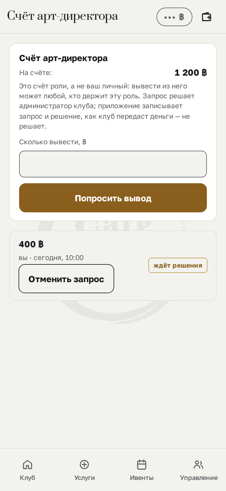
44 roleAccount roleAccountв тестеСчёт роли с СВОИМ ждущим запросом (шаг 27, рецепт `_docs/recept/ekran/27/roleAccount.md`): строка запроса — сумма, `.pill` состояния и «Отменить запрос» (R10, `.btn ghost`) в списке `.rows`. ⚠ Снимок ЖИВОГО режима на фикстуре; форма ответа — по снимку api `withdraw-mine-club` (страж формы съёмки), числа — фикстура. Признак — «Отменить запрос»: кнопка рисуется только у своего ждущего. Поле `pending` счёта — `null`: формы этого объекта в снимке api нет, и выдумывать её съёмка не вправе.видимость: строкой счёта роли в «Ваших ролях» на «Клубе» — у держателя art_director, space_manager или head (raAccounts); head в фикстуре видимости есть только у «владельца», а вкладки «Клуб» у него нет — членства в тестовой базе нет, поэтому имена не измерены, а не «никто»; с членом клуба при такой роли в фикстуре условие заменяется на дверь
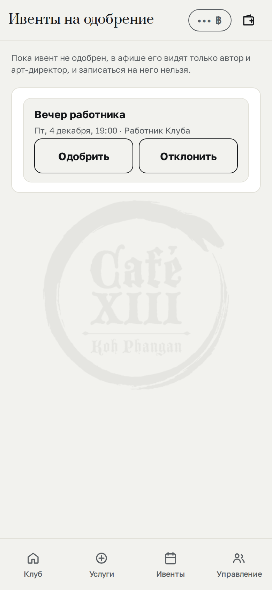
45 Ивенты на одобрение eventApprovalв тестеИвенты на одобрение (фича 4, рецепт `_docs/recept/ekran/odobrenie/eventApproval.md`): надпись о том, что неодобренный ивент в афише видят только автор и арт-директор, ниже очередь — название, время и автор, кнопки «Одобрить» и «Отклонить». ⚠ Снимок ЖИВОГО режима на фикстуре: форма — по снимку api `events-pending-approval` (страж формы съёмки), значения — заглушка `ODOBR.PROW` из `tools/live.cjs`. Признак — «Вечер работника»: название из фикстуры, без неё экран печатал бы загрузку.видят: владелец · дверь на «Управление»
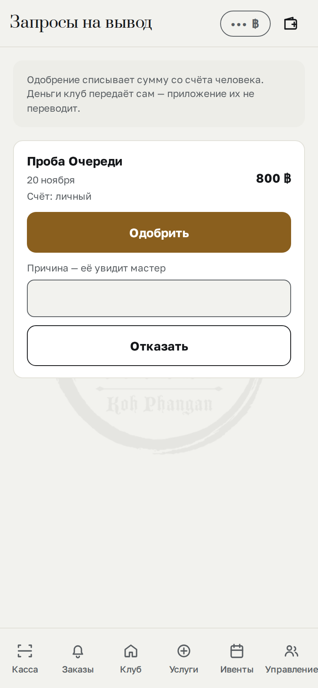
46 Запросы на вывод withdrawQueueв тестеОчередь запросов на вывод у администратора (шаг 25, Cafe13KPG#1077): кто просит, когда, с какого счёта и сколько, кнопки решения. ⚠ Снимок ЖИВОГО режима на фикстуре: право `mayWithdrawQueue() = LIVE && grant('admin')`. Форма фикстуры — по снимку api `withdraw-queue-admin`. Признак — «Проба Очереди»: имя из фикстуры, без неё экран печатал бы «не загрузились».видят: владелец · дверь на «Управление»
снимка нет: снимок делается вне Telegram, где прав нет ни у кого: экран живёт только при сервере клуба
47 Заявки на членство memberRequestsне готов · кадры E42Заявки на членство: кто подал, какой вид выбрал, решение. Снимка нет: вход закрыт реестром, и в демонстрации кнопки на него тоже нет.видят: сегодня никто · в живом приложении не показываетсясостояние: написан, ЖДЁТ ВКЛЮЧЕНИЯ · вход нарисован и закрыт самим реестром (1) — включается вместе с экраном, одной строкой
снимка нет: снимок делается вне Telegram, где прав нет ни у кого: экран живёт только при сервере клуба
48 Заявки на доступ joinQueueв тесте · кадры E45Заявки на доступ: просьбы людей, которых в приложении ещё нет, с чеком; согласие или отказ. Снимка нет: экран стоит под правом главы клуба, а снимок делается вне Telegram.видят: владелец · дверь на «Управление»
снимка нет: снимок делается вне Telegram, где прав нет ни у кого: экран живёт только при сервере клуба
49 Заявки на пополнение topupQueueв тесте · кадры E56Заявки на пополнение: кто просит, сумма, чек; зачислить или отказать с причиной. Снимка нет: экран стоит под ответственностью «Пополнение онлайн», а снимок делается вне Telegram.видят: владелец · дверь на «Управление»
снимка нет: снимок делается вне Telegram, где прав нет ни у кого: экран живёт только при сервере клуба
50 Заявка на пополнение topupReqв тесте · кадры E56bЗаявка на пополнение: сумма, способ, кто и когда, чек; «Зачислить N ฿» — сразу, без подтверждения (Cafe13KPG#695), «Отказать» с причиной. Свою заявку решает другой ответственный.видят: владелец · право mayTopups() и за экраном «Заявки на пополнение» (в заявку ведёт строка очереди, а очередь приходит с сервера — обходом не подтверждено)
снимка нет: снимок делается вне Telegram, где прав нет ни у кого: экран живёт только при сервере клуба
51 Управление manageв тесте · кадры E46Вкладка главы клуба: два входа — «Заявки на доступ» и «Члены клуба». Снимка нет: вкладка стоит под правом главы клуба, а снимок делается вне Telegram.видят: владелец · своя вкладка
3 экрана
Бизнес-партнёр
Член клуба со своим направлением внутри клуба и его отчётностью.
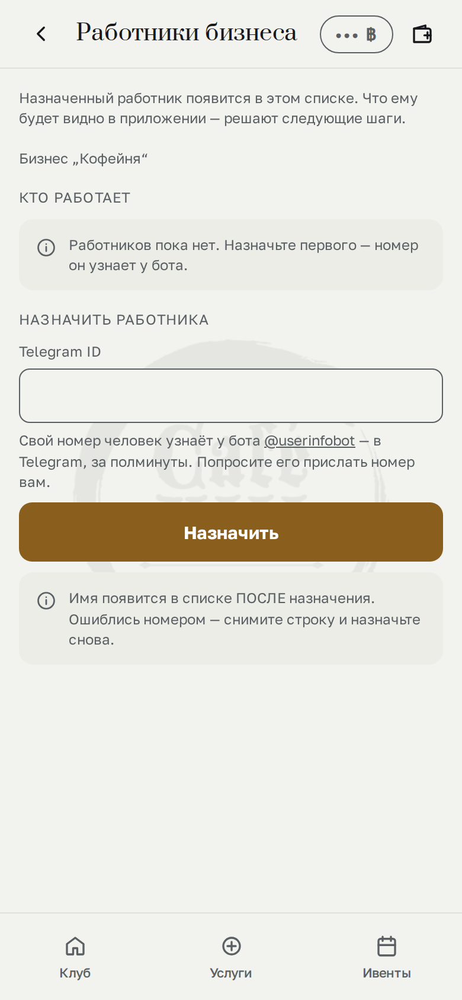
52 Работники бизнеса bizWorkersв тестеРаботники бизнеса партнёра (шаг 14, рецепт `_docs/recept/ekran/14/bizWorkers.md`): чьи это работники, кто уже работает и поле номера для нового. ⚠ Снимок — ОДИН вид из восьми: бизнес один и оплачен, работников пока нет. Виды со строкой работника, с признаком «и в другом бизнесе», с окном отмены у «Снять», с переключателем двух бизнесов, с неоплаченным бизнесом, с отказом сервера и с «Сюда нельзя» сюда не попадают и фикстурой не достаются (довод — в комментарии выше). Признак — «Бизнес „Кофейня“»: он держит и ветку ОДНОГО бизнеса (у двух и более на этом месте переключатель), и то, что бизнес вообще найден. ⚠ «Кофейня» — ЗНАЧЕНИЕ демо-набора самого экрана (там же, строка 125): правят набор — правят и признак тем же ходом, иначе отказ съёмки прочтётся «экран сломался». Снимок демонстрации: данные выдуманы, в Telegram их отдаёт сервер; руками в демонстрации сюда не попасть — дверь стоит у партнёра с согласованной заявкой.видимость: кнопкой «Работники» в блоке «Свой бизнес в клубе» на «Клубе» — у партнёра с согласованной заявкой (/partner/requests/mine, status approved); фикстура видимости заявок в партнёры в страницу не кладёт, поэтому имена не измерены, а не «никто»; с партнёром в фикстуре условие заменяется на дверь
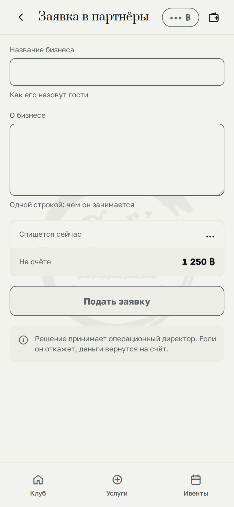
53 Заявка в партнёры · подача partnerApplyв тестеЗаявка в партнёры, сама форма (шаг 13): название бизнеса, описание одной строкой, «Спишется сейчас» и «На счёте» в ряд, «Подать заявку» и слово о решении операционного директора. ⚠ Цена здесь «…», и это не недоделка: `loadPartnerPrice()` зовётся только в живом режиме (`js/21-navigaciya.js:577`), а вне Telegram цену не у кого спросить — в Telegram на этом месте стоит число сервера. Признак — «Как его назовут гости»: подпись поля, то есть он держит ФОРМУ и не зависит ни от одного числа. Данных у этого вида нет вовсе, поэтому прихода набора он не держит — сказано, а не умолчано.видимость: кнопкой «Я партнёр» в блоке «Свой бизнес в клубе» на «Клубе» — у члена клуба, когда сервер назвал цену (`GET /partner/price`, на 06.11.2026 ручки нет — кнопка погашена); обход дверей ловит только [data-go], а это [data-action], поэтому имена не измерены, а не «никто»
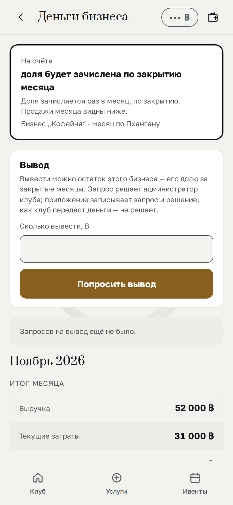
54 Деньги бизнеса bizMoneyв тестеДеньги бизнеса партнёра (Cafe13KPG#1077): шапка бизнеса, итог месяца — выручка, текущие затраты, чистая прибыль — и как она делится между партнёром и клубом. Признак — «Чистая прибыль»: строка рисуется только у пришедшего месяца, без него экран печатал бы «Загружаем деньги бизнеса…». Числа и «Кофейня» — демо-набор самого экрана (`js/17-ekrany-upravlenie.js`, `bizMoney`), в Telegram их отдаёт сервер.видимость: строкой «Деньги бизнеса» в блоке «Свой бизнес в клубе» на «Клубе» — у партнёра с согласованной заявкой (/partner/requests/mine, status approved); фикстура видимости заявок в партнёры в страницу не кладёт, поэтому имена не измерены, а не «никто»; с партнёром в фикстуре условие заменяется на дверь
4 экрана
Бар · исполнитель
Рабочее место на баре: заказы, съёмка напитков, отчёт за день, затраты направления и карточки меню. Карточку заводит бар, работник бизнеса или куратор направления — работник ведёт её, пока она черновик (шаг 15).
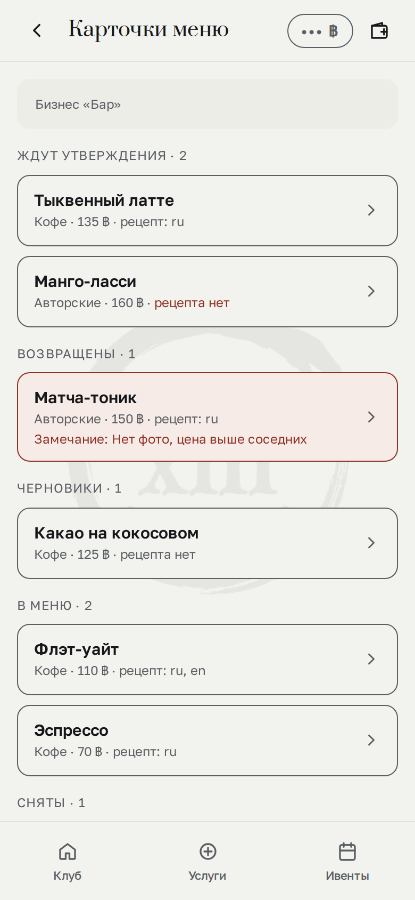
55 Карточки меню barCardsв тесте · кадры E26,E39Карточки меню направления: группы по состоянию («Ждут утверждения», «Возвращены», «Черновики», «В меню», «Сняты»), у каждой число в заголовке; строка позиции несёт название, группу, цену и язык рецепта, у возвращённой — замечание куратора. Ниже «Новая карточка». Признак — «Ждут утверждения · 2»: он держит и приход демо-набора, и СЧЁТ в заголовке группы (без набора экран печатал бы «Карточек пока нет — ни в меню, ни в работе»). ⚠ Цифра — ЗНАЧЕНИЕ демо-набора (`DATA.work.cards`, две позиции в `review`): правят набор — правят признак тем же ходом, иначе отказ съёмки прочитается как «экран сломался». Снимок демонстрации: данные выдуманы, в Telegram их отдаёт сервер. ⚠ Вид снят ИСПОЛНИТЕЛЕМ, и партнёрского входа шага 16 на нём нет: вне Telegram у экрана живёт ветка отказа и «Загружаем…», а группа «Карточки на согласовании» требует владения направлением (`BW.dirs`), которое вне живого режима `null`.видят: владелец, куратор с живым членством, работник бара без членства · дверь на «Заказы на баре» или «Клуб»
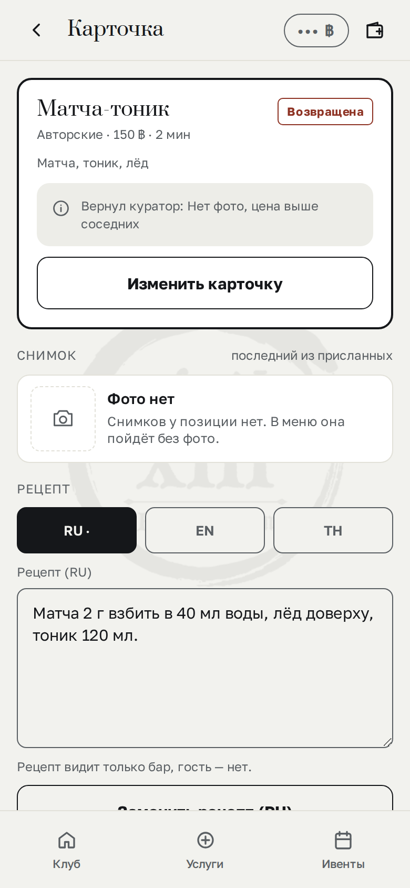
56 Карточка напитка barCardв тесте · кадры E27,E33Карточка позиции, ВОЗВРАЩЁННАЯ куратором: шапка с названием, группой, ценой и минутами, слово состояния, описание для гостя, замечание куратора, «Изменить карточку», слот снимка и группы рецепта. Взята позиция 303 — черновик С замечанием: у неё видно и возврат, и правку, которых у согласованной нет. Признак — «Вернули с замечанием: Нет фото, цена выше соседних»: это замечание ИМЕННО позиции 303 из демо-набора, то есть он держит сразу три вещи — приход набора, выбор записи ПО ДОВОДУ и саму ветку возврата. Снимок демонстрации: данные выдуманы, в Telegram их отдаёт сервер. ⚠ Снятое состояние — ГИБРИД: ни куратор, ни работник, ни партнёр. Вне Telegram ложны оба предиката — `cardWorkerOnly()` (начинается с `LIVE`), поэтому рецептная часть рисуется как барной стороне, и `cardCurator()`, с шага 16 уже по двум причинам: он зовёт ещё и владение (`cardPartner()` читает `BW.dirs`). Решений шага 16 на снимке нет; третьего вида не заводим — он снялся бы тем же гибридом.видят: владелец, куратор с живым членством, работник бара без членства · право mayCards() и за экраном «Карточки меню» (в карточку ведёт строка списка карточек, а список приходит с сервера — обходом не подтверждено)
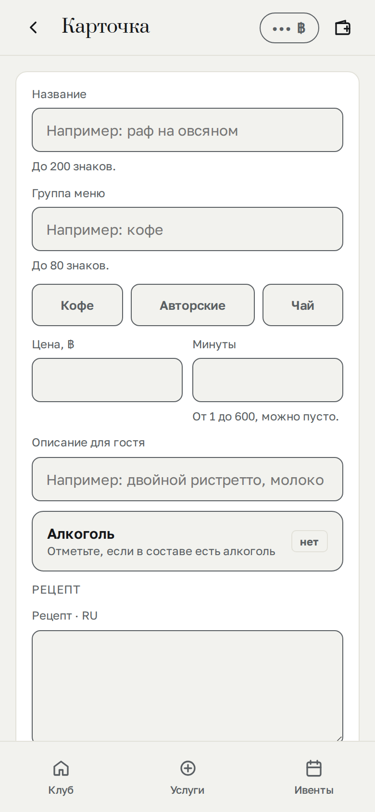
57 Карточка напитка barCardв тесте · кадры E27,E33Та же `barCard`, вторая её половина — ФОРМА заведения: название, группа меню с готовыми группами направления, цена и минуты в ряд, описание для гостя, строка-переключатель «Алкоголь» и «Сохранить черновик». Признак — «Сохранить черновик»: эти слова стоят ТОЛЬКО в ветке заведения (`id === 'new'`), у правки черновика кнопка зовётся «Сохранить изменения», — то есть признак держит именно ветку, а не экран вообще. ⚠ Подпись «Пока карточка в работе, поля можно исправить…» — слова клиента: ручка правки черновика есть с шага 15, и прежнее «Поля потом не исправить» стало бы ложью.видят: владелец, куратор с живым членством, работник бара без членства · право mayCards() и за экраном «Карточки меню» (в карточку ведёт строка списка карточек, а список приходит с сервера — обходом не подтверждено)
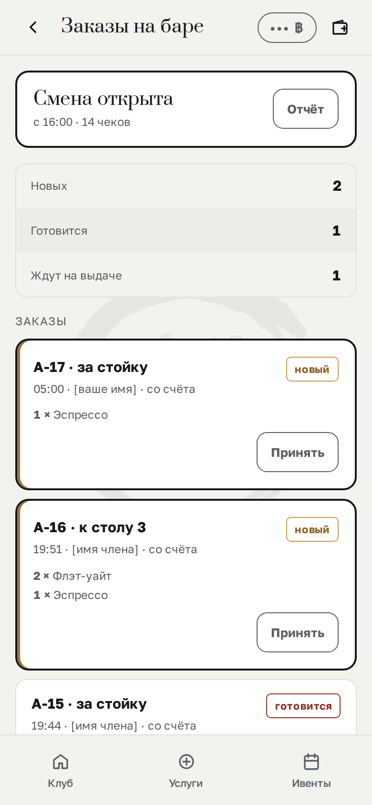
58 Заказы на баре barQueueв тесте · кадры E41Очередь заказов бара (кадр E41, шаг 22): смена и её счёт, число новых, готовящихся и ждущих на выдаче, ниже заказы с номером, местом, временем, составом и кнопкой следующего шага. Признак — «A-16 · к столу 3»: номер и место заказа демо-набора, то есть он держит и приход набора, и строку заказа. ⚠ Верхний заказ «A-17 · за стойку» — не из набора: его отправила настоящим кликом съёмка `24-bar-order` выше, а «05:00» — приколотые часы съёмки. Поэтому кадр от порядка записей зависит, а от дня — нет. Снимок демонстрации: данные выдуманы, в Telegram их отдаёт сервер.видят: владелец, куратор с живым членством, работник бара без членства · своя вкладка или дверь на «Клуб»
3 экрана
Касса
Работник: сканировать пропуск, внести деньги.
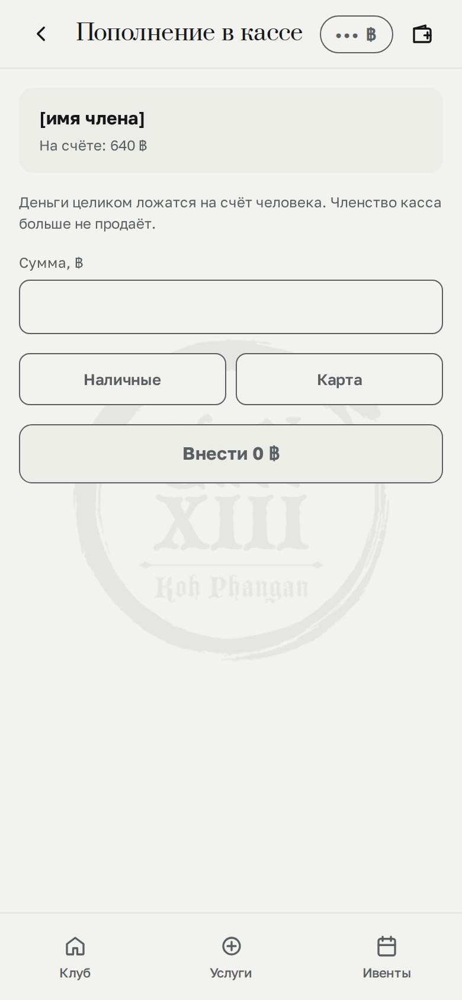
59 Пополнение в кассе tillTopupв тесте · кадры E34Пополнение в кассе (фича 8, рецепт `_docs/recept/ekran/popolnenie/tillTopup.md`): работник вносит деньги на счёт человека — сумма, наличные или карта, кнопка «Внести». Деньги целиком ложатся на счёт; членство касса больше не продаёт — это и есть признак снимка. Имя и остаток — демонстрационные.видят: владелец, работник без членства · за экраном «Карточка человека» (из карточки человека, строкой «что продать» — обходом не подтверждено)60 Касса staffв тесте · кадры E34Касса работника вне Telegram (Cafe13KPG#1077): демо-вид смены — что внесено и отменено за смену. Признак — «Внесено за смену»: строка демо-ветки. ⚠ Живая касса (скан пропуска, код, пришедшие) рисуется только при `LIVE` и этим снимком НЕ описана. Касса в живом режиме заморожена словом владельца 05.11; снимок демо этого не меняет.видят: владелец, работник без членства · своя вкладка61 Карточка человека tillPersonв тесте · кадры E34Карточка найденного человека у кассы (Cafe13KPG#1077): имя, членство и остаток перед приёмом, выбор вида приёма. Признак — «[имя члена]»: имя из демо-набора `W.tillWho` (`js/21-navigaciya.js`), без него экран печатал бы «Человек не выбран».видят: владелец, работник без членства · за экраном «Касса» (кнопки нет вовсе: туда уходит сам код, ответом на скан пропуска — обходом не подтверждено)
1 экран
Ночная тема
Тему задаёт Telegram, а не приложение. Ночные цвета сняты с вечернего света места.
62 Клуб homeв тесте · кадры E51,E53,E68Главный экран ночью. Тему даёт Telegram, не приложение.видят: владелец, работник без членства, куратор с живым членством, работник бара без членства, гость без ролей · своя вкладка
1 экран
Бар · куратор
Кабинет куратора: деньги месяца, доля клуба, состояние меню.
63 Карточка бизнеса myBizв тестеКарточка дела (фича 10, рецепт `_docs/recept/ekran/moi-biznesy/myBiz.md`): рабочие строки ОДНОГО выбранного дела — заказы, карточки меню, доход и расход. Вход — строка дела в группе «Мои бизнесы» на «Клубе»; группа есть у куратора или бара ДВУХ активных дел и больше, при одном деле строки стоят на «Клубе», как прежде. ⚠ Снимок ЖИВОГО режима на фикстуре: куратор «Бара» (7) и «Чайной у моря» (9), снят вход в «Чайную». Признак — «Бизнес «Чайная у моря»»: название выбранного дела словом сервера, то есть он держит и сам выбор, и то, что открылось не первое дело списка.видимость: строкой дела в группе «Мои бизнесы» на «Клубе» — у куратора или бара двух активных бизнесов и больше (гранты bar/curator с direction_id); обход дверей ловит только [data-go], а это [data-action], и в фикстуре видимости такого человека нет, поэтому имена не измерены, а не «никто»
22 экрана
Без снимка
снимка нет: снимок делается вне Telegram, где прав нет ни у кого: экран живёт только при сервере клуба
64 Членство membershipне готов · кадры E38видят: сегодня никто · в живом приложении не показываетсясостояние: написан, НЕ включён · вход в коде есть (не меньше 1), но в живом приложении он серый и не нажимается — потому что ЭКРАН НЕ ПОДКЛЮЧЁН, а не выключен словом: включится вместе с экраном
снимка нет: снимок делается вне Telegram, где прав нет ни у кого: экран живёт только при сервере клуба
65 День кассы tillDayв тесте · кадры E36видят: сегодня никто · заморожен словом владельца 29.10.2026 (FROZEN, Cafe13KPG#510): в живом приложении вход серый у всех, экран говорит «временно недоступно»состояние: заморожен словом владельца 29.10.2026 (FROZEN, Cafe13KPG#510): в живом приложении вход серый у всех, экран говорит «временно недоступно»
снимка нет: снимок делается вне Telegram, где прав нет ни у кого: экран живёт только при сервере клуба
66 Продажа членства tillMembershipне готов · кадры E34видят: сегодня никто · в живом приложении не показываетсясостояние: написан, НЕ включён · входа в приложении нет вовсе — человек до него не дойдёт
снимка нет: снимок делается вне Telegram, где прав нет ни у кого: экран живёт только при сервере клуба
67 Новое мероприятие eventNewв тестевидят: владелец, работник без членства, куратор с живым членством · дверь на «Афиша» или «Мои мероприятия» и путь открыт только при непустой афише
снимка нет: снимок делается вне Telegram, где прав нет ни у кого: экран живёт только при сервере клуба
68 Управление мероприятием eventManageне готоввидят: сегодня никто · в живом приложении не показываетсясостояние: написан, НЕ включён · вход в коде есть (не меньше 1), но в живом приложении он серый и не нажимается — потому что ЭКРАН НЕ ПОДКЛЮЧЁН, а не выключен словом: включится вместе с экраном
снимка нет: снимок делается вне Telegram, где прав нет ни у кого: экран живёт только при сервере клуба
69 Моё направление partnerне готоввидят: сегодня никто · входа обход не нашёлсостояние: написан, НЕ включён · вход в коде есть (не меньше 1), но в живом приложении он серый и не нажимается — потому что ЭКРАН НЕ ПОДКЛЮЧЁН, а не выключен словом: включится вместе с экраном
снимка нет: снимок делается вне Telegram, где прав нет ни у кого: экран живёт только при сервере клуба
70 Новая услуга serviceNewне готоввидят: сегодня никто · в живом приложении не показываетсясостояние: написан, НЕ включён · вход в коде есть (не меньше 1), но в живом приложении он серый и не нажимается — потому что ЭКРАН НЕ ПОДКЛЮЧЁН, а не выключен словом: включится вместе с экраном
снимка нет: снимок делается вне Telegram, где прав нет ни у кого: экран живёт только при сервере клуба
71 Доход и расход бара barMoneyв тестевидят: сегодня никто · заморожен словом владельца 29.10.2026 (FROZEN, Cafe13KPG#510): в живом приложении вход серый у всех, экран говорит «временно недоступно»состояние: заморожен словом владельца 29.10.2026 (FROZEN, Cafe13KPG#510): в живом приложении вход серый у всех, экран говорит «временно недоступно»
снимка нет: снимок делается вне Telegram, где прав нет ни у кого: экран живёт только при сервере клуба
72 Съёмка напитков barShotне готов · кадры E30видят: сегодня никто · в живом приложении не показываетсясостояние: написан, НЕ включён · вход в коде есть (не меньше 1), но в живом приложении он серый и не нажимается — потому что ЭКРАН НЕ ПОДКЛЮЧЁН, а не выключен словом: включится вместе с экраном
снимка нет: снимок делается вне Telegram, где прав нет ни у кого: экран живёт только при сервере клуба
73 Отчёт за день barDayв тестевидят: сегодня никто · заморожен словом владельца 29.10.2026 (FROZEN, Cafe13KPG#510): в живом приложении вход серый у всех, экран говорит «временно недоступно»состояние: заморожен словом владельца 29.10.2026 (FROZEN, Cafe13KPG#510): в живом приложении вход серый у всех, экран говорит «временно недоступно»
снимка нет: снимок делается вне Telegram, где прав нет ни у кого: экран живёт только при сервере клуба
74 Затраты направления barExpenseне готоввидят: сегодня никто · в живом приложении не показываетсясостояние: написан, НЕ включён · входа в приложении нет вовсе — человек до него не дойдёт
снимка нет: снимок делается вне Telegram, где прав нет ни у кого: экран живёт только при сервере клуба
75 Кабинет куратора curatorне готоввидят: сегодня никто · в живом приложении не показываетсясостояние: написан, НЕ включён · входа в приложении нет вовсе — человек до него не дойдёт
снимка нет: снимок делается вне Telegram, где прав нет ни у кого: экран живёт только при сервере клуба
76 Раздел временно недоступен frozenслужебныйвидимость: показывается вместо любого замороженного экрана (FROZEN, слово владельца 29.10.2026)
снимка нет: снимок делается вне Telegram, где прав нет ни у кого: экран живёт только при сервере клуба
77 Календарь calendarв тестевидят: владелец, работник без членства, куратор с живым членством, работник бара без членства, гость без ролей · дверь на «Афиша»
снимка нет: снимок делается вне Telegram, где прав нет ни у кого: экран живёт только при сервере клуба
78 Чайные мастера teaMastersв тестевидят: владелец, работник без членства, куратор с живым членством, работник бара без членства, гость без ролей · дверь на «Услуги и бар»
снимка нет: снимок делается вне Telegram, где прав нет ни у кого: экран живёт только при сервере клуба
79 Карточка мастера teaMasterв тестевидят: владелец, работник без членства, куратор с живым членством, работник бара без членства, гость без ролей · за экраном «Чайные мастера» (в карточку ведёт строка списка мастеров, а список приходит с сервера — обходом не подтверждено)
снимка нет: снимок делается вне Telegram, где прав нет ни у кого: экран живёт только при сервере клуба
80 Бронь мастера teaBookне готоввидят: сегодня никто · в живом приложении не показываетсясостояние: написан, НЕ включён · вход в коде есть (не меньше 1), но в живом приложении он серый и не нажимается — потому что ЭКРАН НЕ ПОДКЛЮЧЁН, а не выключен словом: включится вместе с экраном
снимка нет: снимок делается вне Telegram, где прав нет ни у кого: экран живёт только при сервере клуба
81 Карточка чайного мастера teaApplyв тестевидимость: кнопкой в блоке «Чайный мастер» на «Клубе» — у всех, роль и членство не спрашиваются (№65 «а»); блок строится по ответу GET /tea/card/mine, а в фикстуре видимости этого ответа нет, поэтому имена не измерены, а не «никто»
снимка нет: снимок делается вне Telegram, где прав нет ни у кого: экран живёт только при сервере клуба
82 Чайная церемония · заявка teaHoldв тестевидимость: кнопкой «Провести чайную церемонию» в блоке «Провести в клубе» на «Клубе» — у всех (№65 «а»), только в живом режиме: masterOffer() вне живого пуст, а блок ждёт /master/requests/mine; обход видимости идёт без сервера, поэтому имена не измерены, а не «никто»
снимка нет: снимок делается вне Telegram, где прав нет ни у кого: экран живёт только при сервере клуба
83 Чайная церемония teaJoinв тестевидят: владелец, работник без членства, куратор с живым членством, работник бара без членства, гость без ролей · за экраном «Календарь» (в запись ведёт строка церемонии в календаре, а строки приходят с сервера — обходом не подтверждено)
снимка нет: снимок делается вне Telegram, где прав нет ни у кого: экран живёт только при сервере клуба
84 Карточки чайных мастеров teaReqsв тестевидимость: за «Управлением», право mayMasters — арт-директор или админ; у админа право спрошено фикстурой видимости, а человека с ОДНОЙ ролью арт-директора в ней НЕТ (Cafe13KPG#871) — ветка art_director не измерена, поэтому имена не измерены (Cafe13KPG#612), а не «никто»
снимка нет: снимок делается вне Telegram, где прав нет ни у кого: экран живёт только при сервере клуба
85 Согласование карточки чайного мастера teaReqв тестевидимость: за «Управлением», право mayMasters — арт-директор или админ; у админа право спрошено фикстурой видимости, а человека с ОДНОЙ ролью арт-директора в ней НЕТ (Cafe13KPG#871) — ветка art_director не измерена, поэтому имена не измерены (Cafe13KPG#612), а не «никто»
11 экранов
Нарисовано, кода ещё нет
Кадры базы экранов есть, кода нет. Стадия 1 по пути экрана: сначала рисуем, потом разрабатываем.
снимка нет: кода ещё нет — есть только кадры базы экранов
86 Занятость суток занятость сутокдо стадии 1 · кадры E31Занятость места по суткам: накладки, скрытые события, переход через полночь.видят: сегодня никто · в живом приложении не показывается
снимка нет: кода ещё нет — есть только кадры базы экранов
87 Архив мероприятий архив мероприятийдо стадии 1 · кадры E32Архив прошедших мероприятий — у работника клуба и у организатора.видят: сегодня никто · в живом приложении не показывается
снимка нет: кода ещё нет — есть только кадры базы экранов
88 Касса · оплата записи касса · оплата записидо стадии 1 · кадры E35Оплата записи на мероприятие через кассу: что оплачиваем, взнос, отказы.видят: сегодня никто · в живом приложении не показывается
снимка нет: кода ещё нет — есть только кадры базы экранов
89 Просьба о доступе просьба о доступе · однадо стадии 1 · кадры E48Одна просьба о доступе у главы клуба: чек во всю ширину или PDF, согласие и отказ со словом (кадры E48*). Вход — из очереди заявок (E45).видят: сегодня никто · в живом приложении не показывается
снимка нет: кода ещё нет — есть только кадры базы экранов
90 Деньги мероприятия деньги мероприятиядо стадии 1 · кадры E63Собрано, гости и четыре доли одного мероприятия — мастеру, клубу, управляющей пространством, арт-директору (кадры E63*). Видят мастер своего мероприятия и арт-директор.видят: сегодня никто · в живом приложении не показывается
снимка нет: кода ещё нет — есть только кадры базы экранов
91 История денег история денегдо стадии 1 · кадры E64Строки счёта члена клуба: зачисления и доля «за мероприятие» (кадр E64).видят: сегодня никто · в живом приложении не показывается
снимка нет: кода ещё нет — есть только кадры базы экранов
92 Допуск в приложение допуск в приложениедо стадии 1 · кадры E70Кто внутри приложения и кто уже нет (кадры E70*). За входом «Допуск в приложение» группы «Доступы».видят: сегодня никто · в живом приложении не показывается
снимка нет: кода ещё нет — есть только кадры базы экранов
93 Членства: виды и срок членства · виды и срокдо стадии 1 · кадры E71Какие членства есть у человека и до какого числа (кадр E71).видят: сегодня никто · в живом приложении не показывается
снимка нет: кода ещё нет — есть только кадры базы экранов
94 Ответственность: роли и направления ответственность · ролидо стадии 1 · кадры E72Кто за что отвечает, кто выдал и когда; в том же семействе — история допуска (кадры E72*).видят: сегодня никто · в живом приложении не показывается
снимка нет: кода ещё нет — есть только кадры базы экранов
95 Мастерство мастерство · статус и месяцдо стадии 1 · кадры E73Кто мастер и до какого месяца оплачен; отдельный кадр на отказ ручки (кадры E73*).видят: сегодня никто · в живом приложении не показывается
снимка нет: кода ещё нет — есть только кадры базы экранов
96 Впустить человека впустить человекадо стадии 1 · кадры E74Форма впуска, окно до отправки и возврат исключённого (кадры E74*).видят: сегодня никто · в живом приложении не показывается